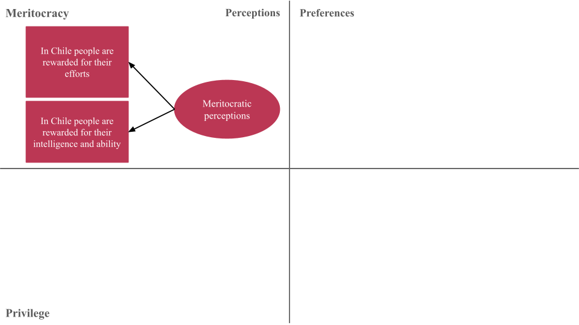
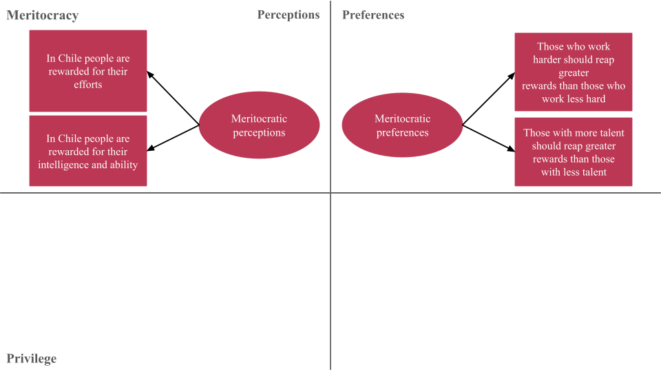
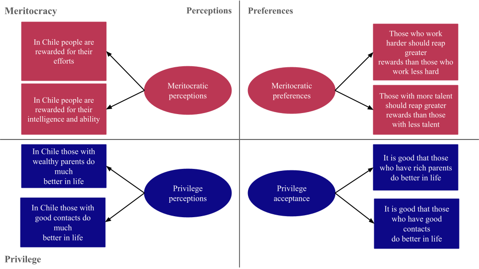
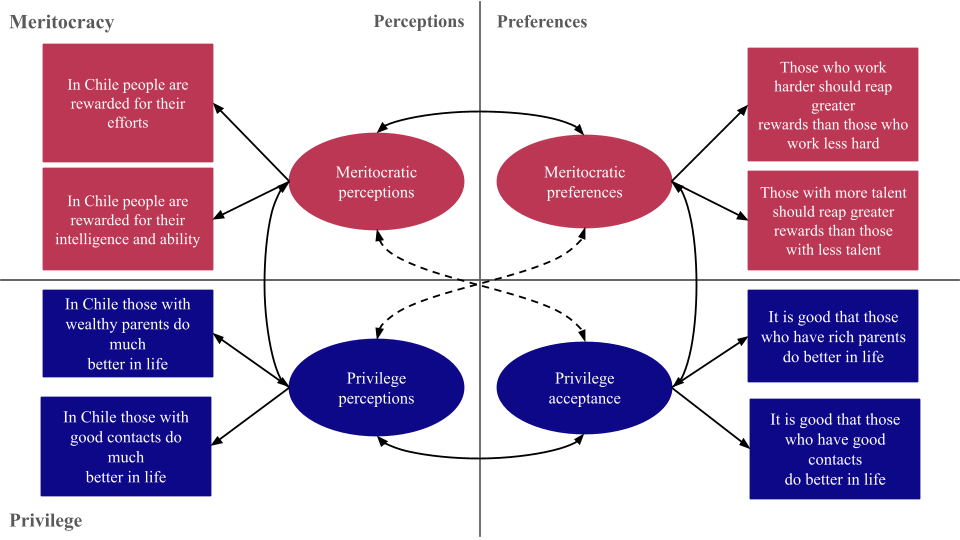
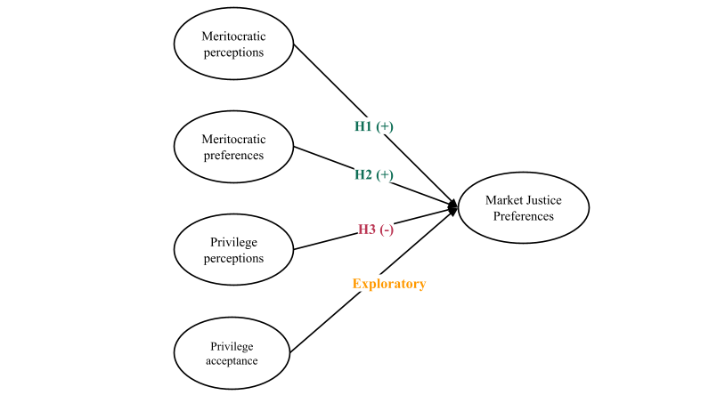
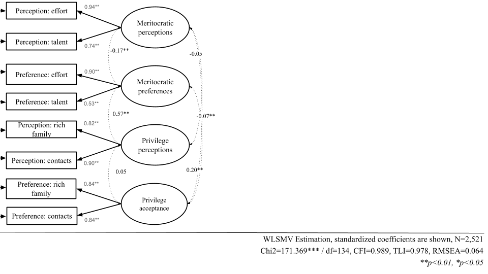
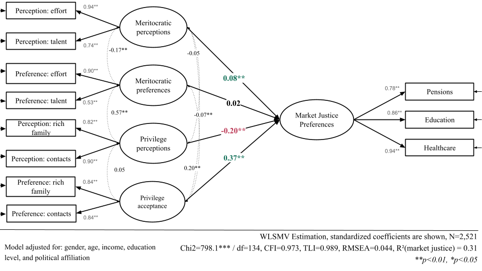
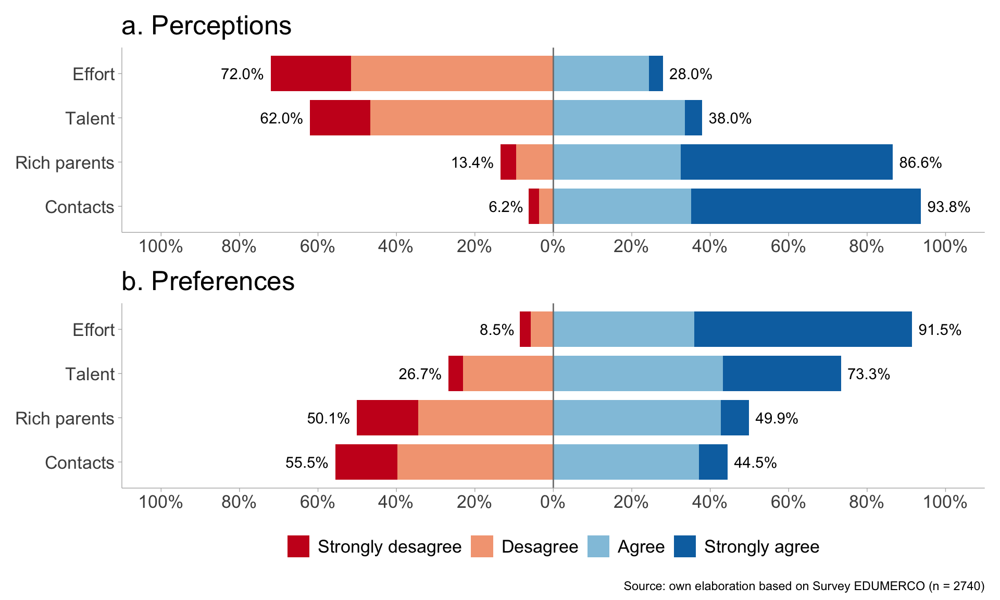
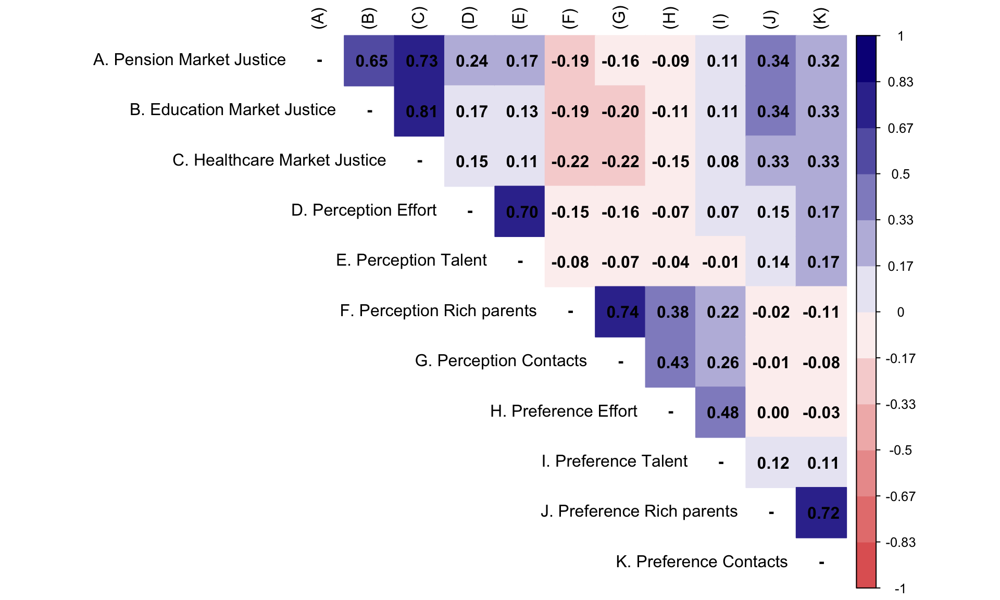

Preferences for Market-Based Welfare: Disentangling the role of merit and privilege beliefs in Chile
Andreas Laffert, Juan Carlos Castillo, René Canales &
Tomás Urzúa
Department of Sociology, University of Chile
WARN Online Workshop: Methods in Welfare Attitudes Research - June 2026
Context and motivation
Background
- Privatization and marketization of public goods, welfare policies, and social services (Gingrich, 2011; Streeck, 2016)
- Changes in the institutional architecture of the welfare state; expansion of market logics (Busemeyer & Iversen, 2020; Ferre, 2023)
- This economic order is reflected in a specific moral economy and policy feedback dynamics (Campbell, 2020; Fernandez & Jaime-Castillo, 2013; Mau, 2015)
Market justice preferences (Busemeyer, 2015; Castillo et al., 2025; Koos & Sachweh, 2019; Lindh, 2015)
Research question and argument
RQ: How do perceptions and preferences of meritocracy and privilege shape support for market-based welfare in Chile?
Argument: Commodification reshapes deservingness principles, and its contributory logic foregrounds merit, making meritocratic beliefs a key driver of market justice preferences (Castillo et al., 2026, 2025). We examine their multiple faces.
Multidimensional framework of meritocracy
.png)
Multidimensional framework of meritocracy

Multidimensional framework of meritocracy

Multidimensional framework of meritocracy

Multidimensional framework of meritocracy

Hypotheses

Data
EDUMERCO: Online survey (CAWI), fielded in 2025, with adult respondents from the Metropolitan Region of Chile
Non-probability sample with quota-based design
→ approximating population parameters by age, gender, education, and socioeconomic statusTotal sample: N = 3,470
Analytical sample: N = 2,521
Results
CFA

SEM Model

Discussion and conclusion
Discussion and conclusion
- Findings: perceiving merit and endorsing privilege raise MJP; perceiving privilege lowers it
- Part of a broader agenda on the policy feedback of commodification (Busemeyer & Iversen, 2020; Koos & Sachweh, 2019; Lindh, 2015); two prior longitudinal studies of ours, but not multidimensional (Castillo et al., 2026, 2025)
- Contribution: multidimensional measurement plus SEM disentangles distinct paths, net of measurement error (Meuleman et al., 2020)
- Limits: cross-sectional, one country; next: social structure (class, stratification, context), conjoint experiments, cross-country
Website: https://jus-mer.com/
Thanks you for your attention!
Comments most welcome 🫡
References
Supplementary Material
Measures
Dependent variable — Market justice preferences
- Justifying income-based access to three core services: healthcare, pensions, and education → e.g. “Is it fair that people with higher incomes access better healthcare than those with lower incomes?”
- 5-point Likert (1 = strongly disagree to 5 = strongly agree)
- Three items → one latent factor
Meritocratic beliefs (4 latent dimensions)
- Same items as the original scale (Castillo et al., 2023)
- 4-point Likert items (1 = strongly disagree to 4 = strongly agree)
Controls
- Sex (man / woman); age; education (years); income quintile; political identification (left / center / right / none)
Analytical strategy
First, we estimate a Confirmatory Factor Analysis of the multidimensional meritocracy scale (Brown, 2015)
Second, we estimate a Structural Equation Model → latent market justice regressed on latent meritocracy factors
\[ \text{MJP}_{i} = \alpha + \beta_1 \eta^{PM}_{i} + \beta_2 \eta^{PNM}_{i} + \beta_3 \eta^{PrM}_{i} + \beta_4 \eta^{PrNM}_{i} + \gamma'X_i + \varepsilon_i \]
Estimation: WLSMV
→ appropriate for ordinal (Likert-type) data (Kline, 2023)Fit cutoffs: CFI, TLI ≥ .95; RMSEA ≤ .06 (Brown, 2015)
Descriptive

Bivariate

Structural model: four paths, four stories
| Predictor (latent) | β (std) | p |
|---|---|---|
| Meritocratic perceptions | +.08 | <.001 |
| Non-meritocratic perceptions | −.20 | <.001 |
| Meritocratic preferences | +.02 | .58 (n.s.) |
| Non-meritocratic preferences | +.37 | <.001 |
- Controls: female −.13; Right +.33, Center +.13, no party ID +.17
- Income quintiles all n.s. → driven by beliefs, not income position
SEM Model: Pensions

SEM Model: Education

SEM Model: Healthcare